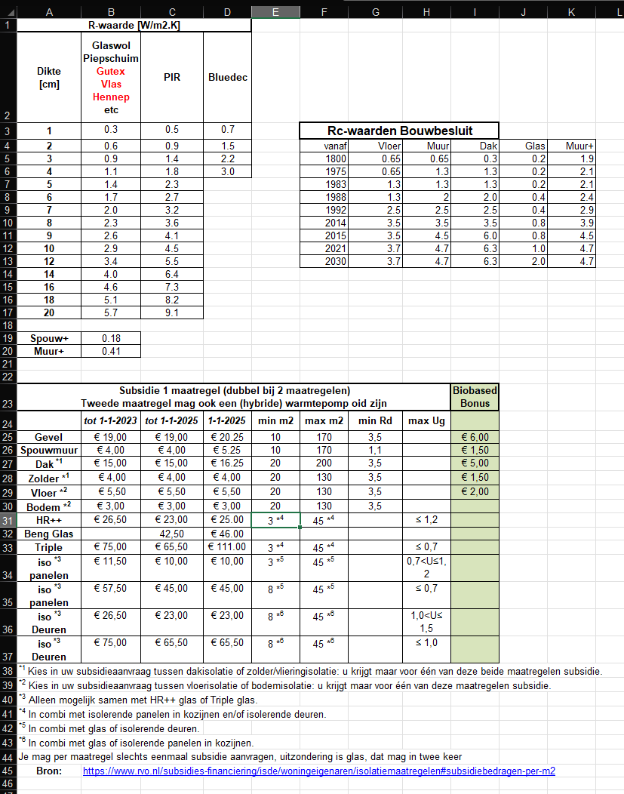

Dit tabblad beavt een aantal handige tabellen, enerzijds voor bewoners en anderzijds voor d EnergieCoach.
Het wordt tijd dat deze pagina herzien wordt:
- Isolatie materialen behoren in deze tijd voorzien te zijn van milieu-impact
- Subsidie tabel kan eigenlijk vervangen worden door de ISDE tabblad dat ook echte berekeningen uitvoert
